if(!require("pacman")) install.packages("pacman")Cargando paquete requerido: pacmanpacman::p_load(tidyverse,
haven,
performance,
janitor,
broom,
jtools)if(!require("pacman")) install.packages("pacman")Cargando paquete requerido: pacmanpacman::p_load(tidyverse,
haven,
performance,
janitor,
broom,
jtools)concentradohogar <- haven::read_dta("datos/concentradohogar.dta")
names(concentradohogar) [1] "folioviv" "foliohog" "ubica_geo" "tam_loc" "est_socio"
[6] "est_dis" "upm" "factor" "clase_hog" "sexo_jefe"
[11] "edad_jefe" "educa_jefe" "tot_integ" "hombres" "mujeres"
[16] "mayores" "menores" "p12_64" "p65mas" "ocupados"
[21] "percep_ing" "perc_ocupa" "ing_cor" "ingtrab" "trabajo"
[26] "sueldos" "horas_extr" "comisiones" "aguinaldo" "indemtrab"
[31] "otra_rem" "remu_espec" "negocio" "noagrop" "industria"
[36] "comercio" "servicios" "agrope" "agricolas" "pecuarios"
[41] "reproducc" "pesca" "otros_trab" "rentas" "utilidad"
[46] "arrenda" "transfer" "jubilacion" "becas" "donativos"
[51] "remesas" "bene_gob" "transf_hog" "trans_inst" "estim_alqu"
[56] "otros_ing" "gasto_mon" "alimentos" "ali_dentro" "cereales"
[61] "carnes" "pescado" "leche" "huevo" "aceites"
[66] "tuberculo" "verduras" "frutas" "azucar" "cafe"
[71] "especias" "otros_alim" "bebidas" "ali_fuera" "tabaco"
[76] "vesti_calz" "vestido" "calzado" "vivienda" "alquiler"
[81] "pred_cons" "agua" "energia" "limpieza" "cuidados"
[86] "utensilios" "enseres" "salud" "atenc_ambu" "hospital"
[91] "medicinas" "transporte" "publico" "foraneo" "adqui_vehi"
[96] "mantenim" "refaccion" "combus" "comunica" "educa_espa"
[101] "educacion" "esparci" "paq_turist" "personales" "cuida_pers"
[106] "acces_pers" "otros_gas" "transf_gas" "percep_tot" "retiro_inv"
[111] "prestamos" "otras_perc" "ero_nm_viv" "ero_nm_hog" "erogac_tot"
[116] "cuota_viv" "mater_serv" "material" "servicio" "deposito"
[121] "prest_terc" "pago_tarje" "deudas" "balance" "otras_erog"
[126] "smg" Para este ejercicio asumiremos y -> ingresos corrientes x -> edad del jefe
base::summaryconcentradohogar %>%
select(edad_jefe, ing_cor) %>%
summary() # comando "listo" edad_jefe ing_cor
Min. : 13.00 Min. : 0
1st Qu.: 39.00 1st Qu.: 28386
Median : 50.00 Median : 46074
Mean : 51.23 Mean : 61490
3rd Qu.: 63.00 3rd Qu.: 74344
Max. :109.00 Max. :7153770 dplyr::summariseNos da un tibble que vamos a poder modificarlo
Podemos crear columnas con indicadores
concentradohogar %>%
dplyr::summarise(media_ing = mean(ing_cor),
mediana_ing = median(ing_cor),
min_ing=min(ing_cor),
max_ing=max(ing_cor),
q1=quantile(ing_cor, probs = 0.25),
q3=quantile(ing_cor, probs = 0.75)) -> descriptivos_ingresoTambién podemos agregar filas:
concentradohogar %>%
group_by(sexo_jefe) %>% # las categorías del grupo se vuelven filas en mi table
dplyr::summarise(media_ing = mean(ing_cor),
mediana_ing = median(ing_cor),
min_ing = min(ing_cor),
max_ing = max(ing_cor),
q1 = quantile(ing_cor, probs = 0.25),
q3 = quantile(ing_cor, probs = 0.75),
sd = sd(ing_cor),
mean_edad = mean(edad_jefe)) # A tibble: 2 × 9
sexo_jefe media_ing mediana_ing min_ing max_ing q1 q3 sd mean_edad
<chr> <dbl> <dbl> <dbl> <dbl> <dbl> <dbl> <dbl> <dbl>
1 1 64378. 47600. 0 7.15e6 29571. 76749. 88680. 50.1
2 2 55149. 42787. 0 1.03e6 25997. 69181. 47745. 53.7{graphics}hist(log(concentradohogar$ing_cor)) # base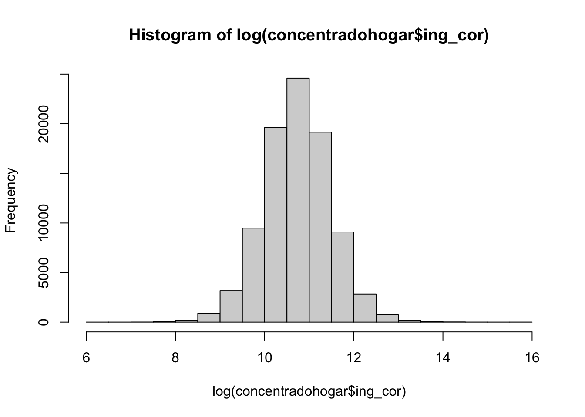
{ggplot2}Grammar of graphics
Recuerda revisar la cheatsheet aquí
concentradohogar %>%
ggplot2::ggplot() +
aes(x=log(ing_cor)) +
geom_histogram(bins = 45)Warning: Removed 9 rows containing non-finite outside the scale range
(`stat_bin()`).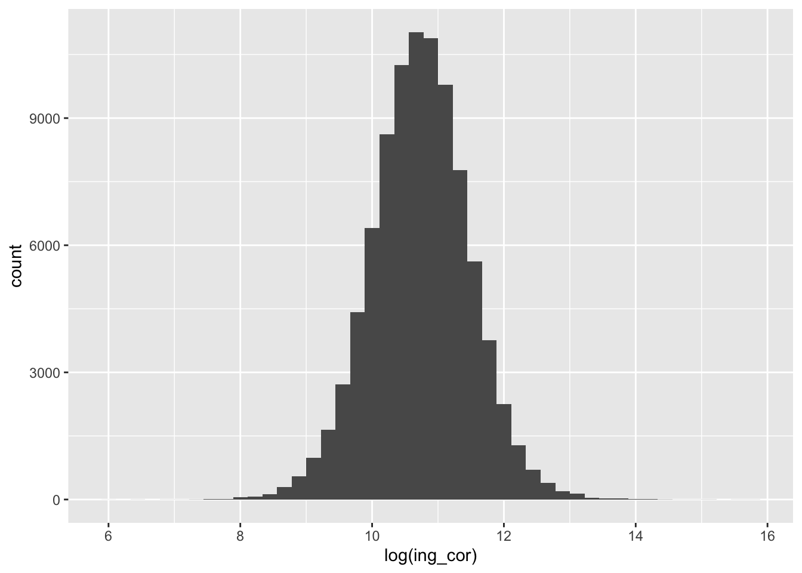
concentradohogar %>%
ggplot2::ggplot() +
aes(x=log(ing_cor)) +
geom_density()Warning: Removed 9 rows containing non-finite outside the scale range
(`stat_density()`).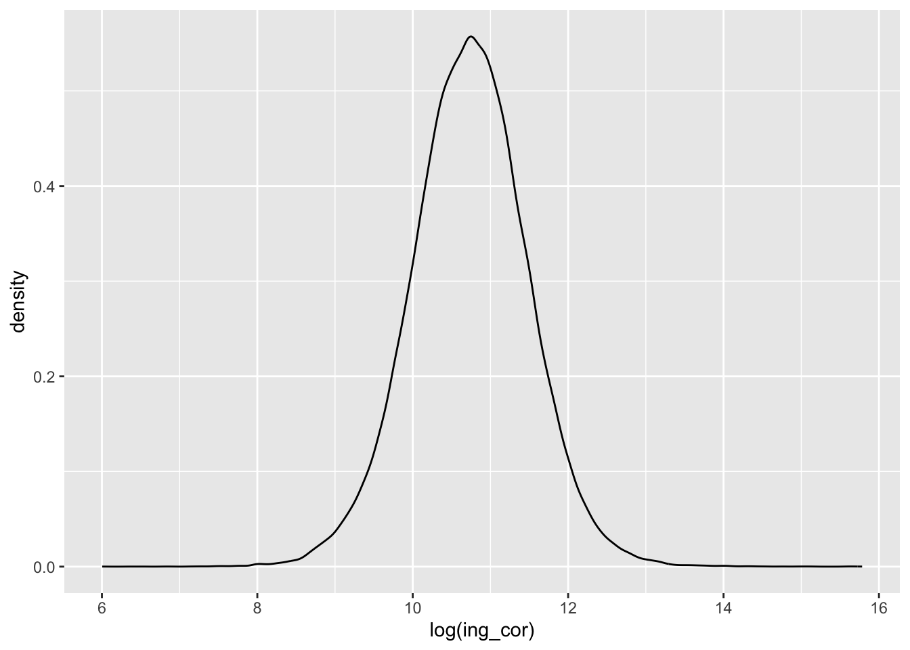
Primero encontraremos la correlación, asumiendo que usamos todas las variables seleccionadas
concentradohogar %>%
filter(!ing_cor==0) %>%
select(edad_jefe, ing_cor, gasto_mon) %>%
cor() # correlación de pearson en formato matricial edad_jefe ing_cor gasto_mon
edad_jefe 1.00000000 -0.00404064 -0.09318674
ing_cor -0.00404064 1.00000000 0.53398331
gasto_mon -0.09318674 0.53398331 1.00000000concentradohogar %>%
filter(!ing_cor==0) %>%
select(edad_jefe, ing_cor, gasto_mon) %>%
cor(method = "spearman") # correlación edad_jefe ing_cor gasto_mon
edad_jefe 1.00000000 -0.03997823 -0.1674359
ing_cor -0.03997823 1.00000000 0.7267596
gasto_mon -0.16743588 0.72675964 1.0000000Hay tres métodos de correlación.
Cuando queremos explicitar las variables, debemos usar with para poder utiliza nuestros elementos de dplyr:
concentradohogar %>%
filter(!ing_cor==0) %>%
select(edad_jefe, ing_cor) %>%
with(
cor(edad_jefe, log(ing_cor)) # para mezclar cor con tidy hay que usar "with()"
) # correlación[1] -0.0481463Con base (no lo vimos en la sesión)
plot(concentradohogar$edad_jefe, log(concentradohogar$ing_cor))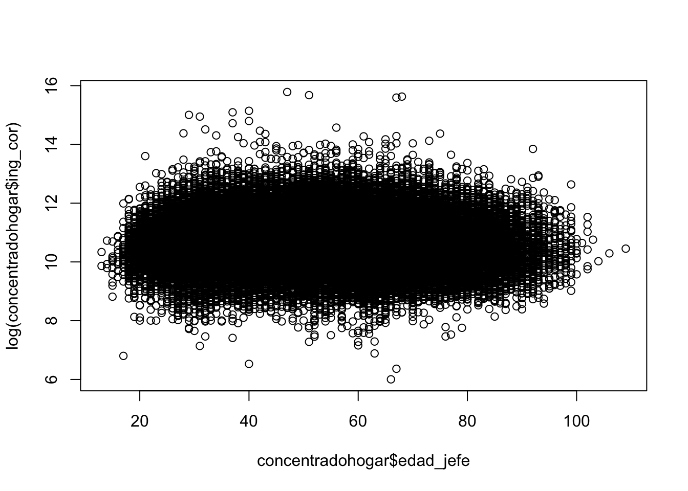
Con {ggplot2}
concentradohogar %>%
filter(ing_cor>0) %>%
ggplot2::ggplot() +
aes(x = edad_jefe,
y = log(ing_cor)) +
geom_point()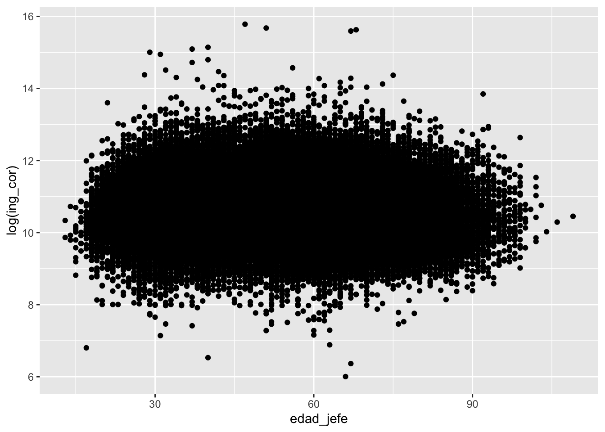
concentradohogar %>%
filter(ing_cor>0) %>%
ggplot2::ggplot() +
aes(x = edad_jefe,
y = log(ing_cor),
alpha = I(0.05)) +
geom_point()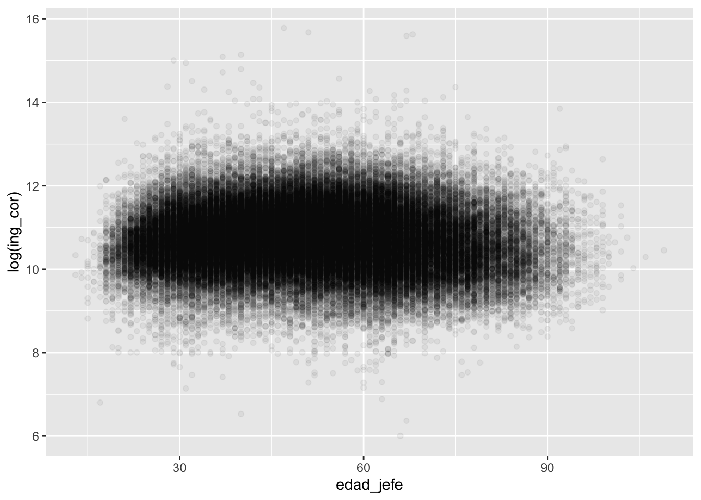
concentradohogar %>%
filter(ing_cor>0) %>%
ggplot2::ggplot() +
aes(x = edad_jefe,
y = log(ing_cor),
alpha = I(0.05)) +
geom_point() +
geom_smooth(method = lm) #linear model`geom_smooth()` using formula = 'y ~ x'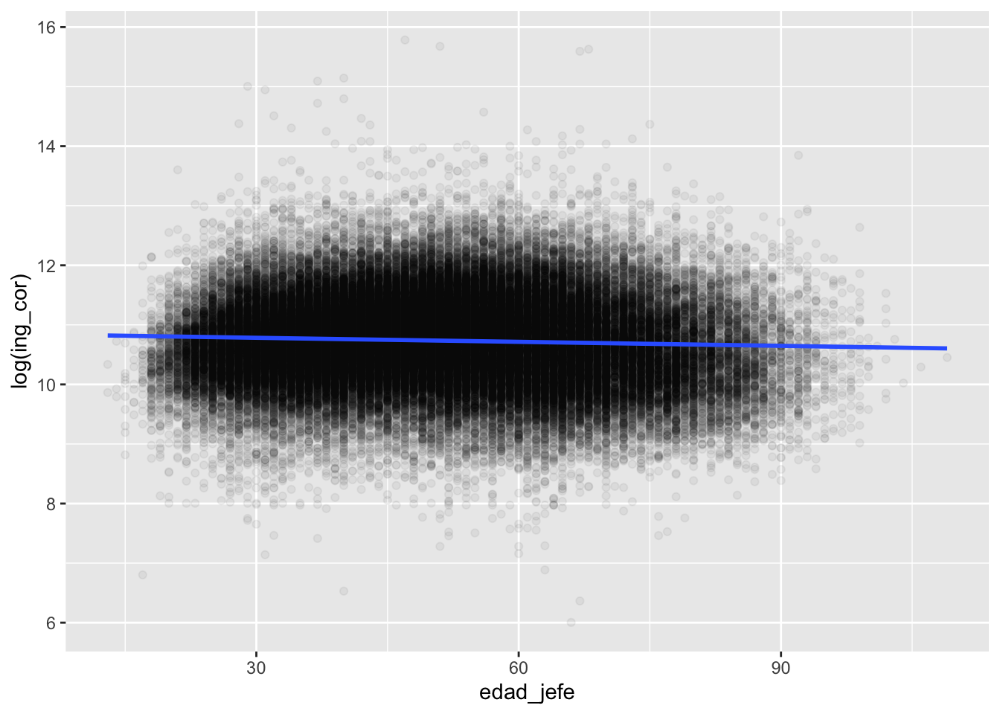
concentradohogar %>%
filter(ing_cor>0) %>%
with(
lm(log(ing_cor) ~ edad_jefe ) # y ~ x
)
Call:
lm(formula = log(ing_cor) ~ edad_jefe)
Coefficients:
(Intercept) edad_jefe
10.850589 -0.002255 # log(y) ~ x -> un cambio de una unidad en x
# cambiar coeficiente*100Guardar los resultados en un objeto será más interesante.
concentradohogar %>%
filter(ing_cor>0) %>%
with(
lm(log(ing_cor) ~ edad_jefe ) # y ~ x
) -> modelo0Con el objeto podemos hacer procesos de inferencia del modelo y además, tener evaluaciónd de supuestos
summary(modelo0)
Call:
lm(formula = log(ing_cor) ~ edad_jefe)
Residuals:
Min 1Q Median 3Q Max
-4.6979 -0.4828 -0.0006 0.4796 5.0385
Coefficients:
Estimate Std. Error t value Pr(>|t|)
(Intercept) 10.8505890 0.0083612 1297.73 <2e-16 ***
edad_jefe -0.0022548 0.0001558 -14.47 <2e-16 ***
---
Signif. codes: 0 '***' 0.001 '**' 0.01 '*' 0.05 '.' 0.1 ' ' 1
Residual standard error: 0.7444 on 90091 degrees of freedom
Multiple R-squared: 0.002318, Adjusted R-squared: 0.002307
F-statistic: 209.3 on 1 and 90091 DF, p-value: < 2.2e-16jtools::export_summs(modelo0)| Model 1 | |
|---|---|
| (Intercept) | 10.85 *** |
| (0.01) | |
| edad_jefe | -0.00 *** |
| (0.00) | |
| N | 90093 |
| R2 | 0.00 |
| *** p < 0.001; ** p < 0.01; * p < 0.05. | |
broom::glance(modelo0) # ajuste globales de modelo# A tibble: 1 × 12
r.squared adj.r.squared sigma statistic p.value df logLik AIC BIC
<dbl> <dbl> <dbl> <dbl> <dbl> <dbl> <dbl> <dbl> <dbl>
1 0.00232 0.00231 0.744 209. 2.18e-47 1 -101246. 202498. 2.03e5
# ℹ 3 more variables: deviance <dbl>, df.residual <int>, nobs <int>broom::tidy(modelo0) # variables# A tibble: 2 × 5
term estimate std.error statistic p.value
<chr> <dbl> <dbl> <dbl> <dbl>
1 (Intercept) 10.9 0.00836 1298. 0
2 edad_jefe -0.00225 0.000156 -14.5 2.18e-47anova(modelo0)Analysis of Variance Table
Response: log(ing_cor)
Df Sum Sq Mean Sq F value Pr(>F)
edad_jefe 1 116 116.002 209.32 < 2.2e-16 ***
Residuals 90091 49926 0.554
---
Signif. codes: 0 '***' 0.001 '**' 0.01 '*' 0.05 '.' 0.1 ' ' 1plot(modelo0)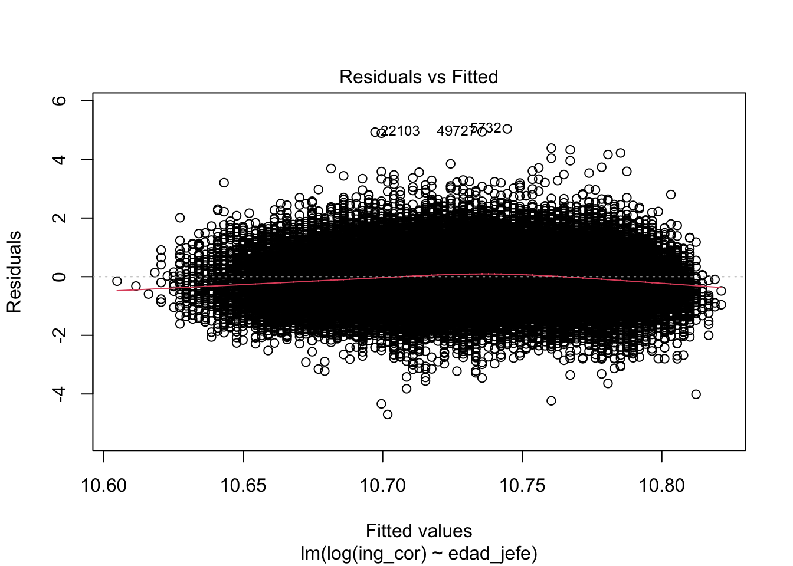
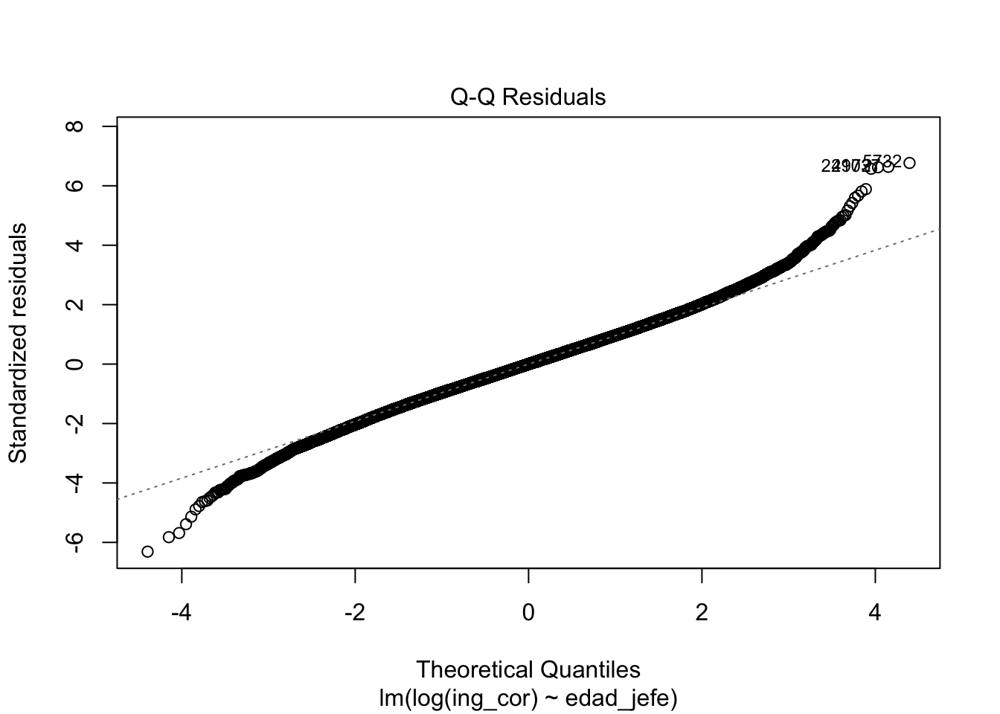
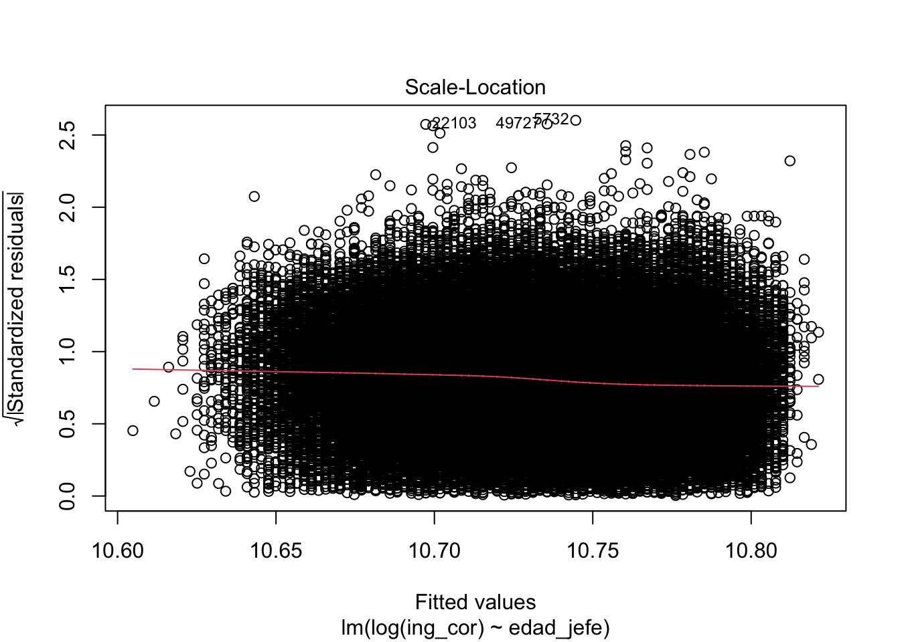
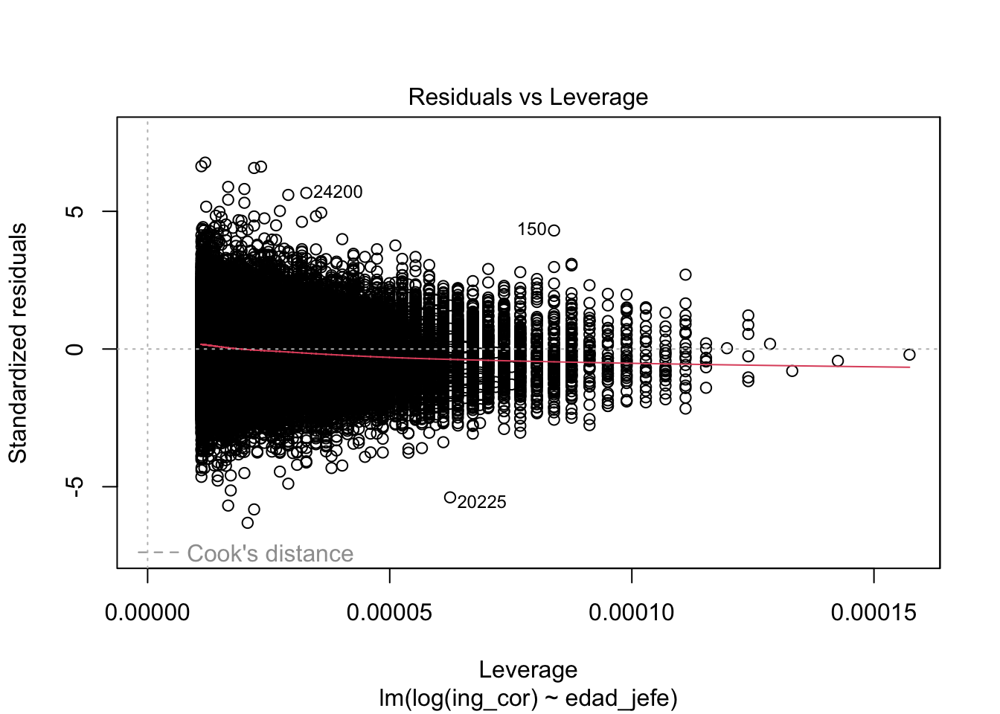
performance::check_model(modelo0)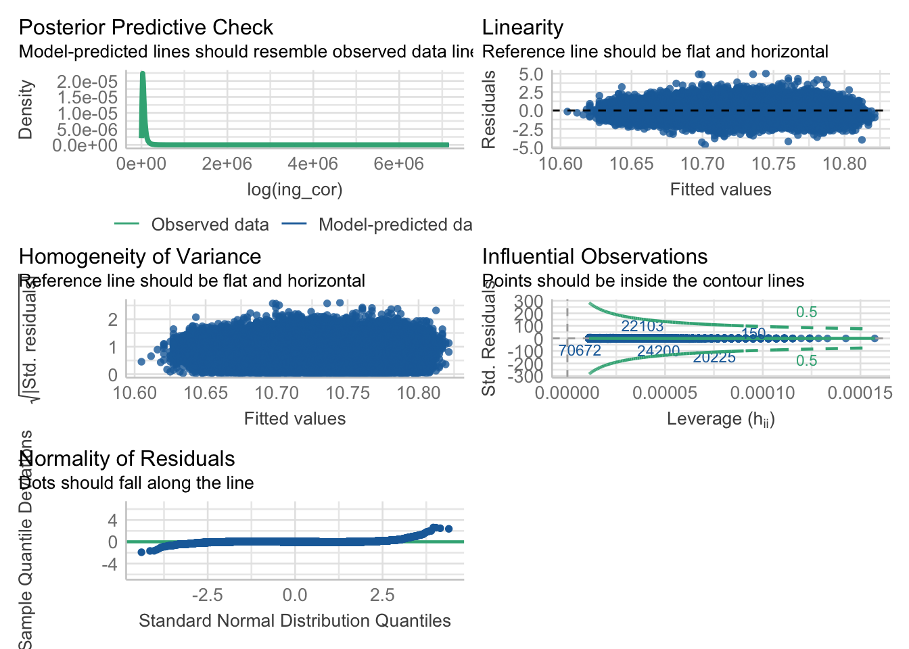
Estima un modelo donde la variable dependiente sea los ingresos por trabajo “ingtrab”
Adjunte su código acá https://forms.gle/nTp12UwiqBcfsjf26